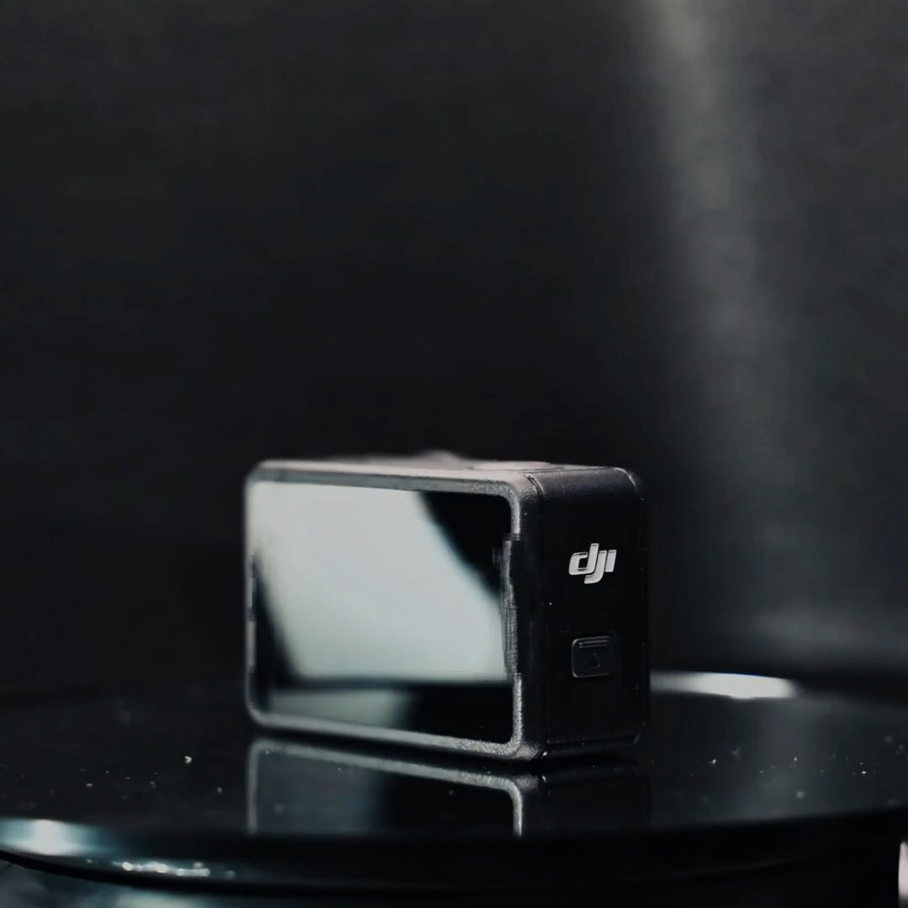
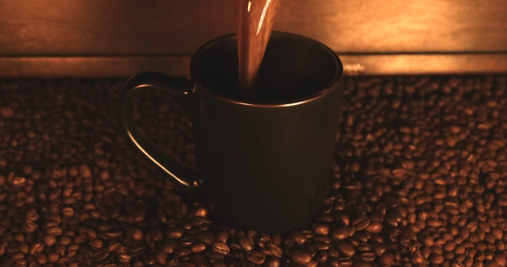
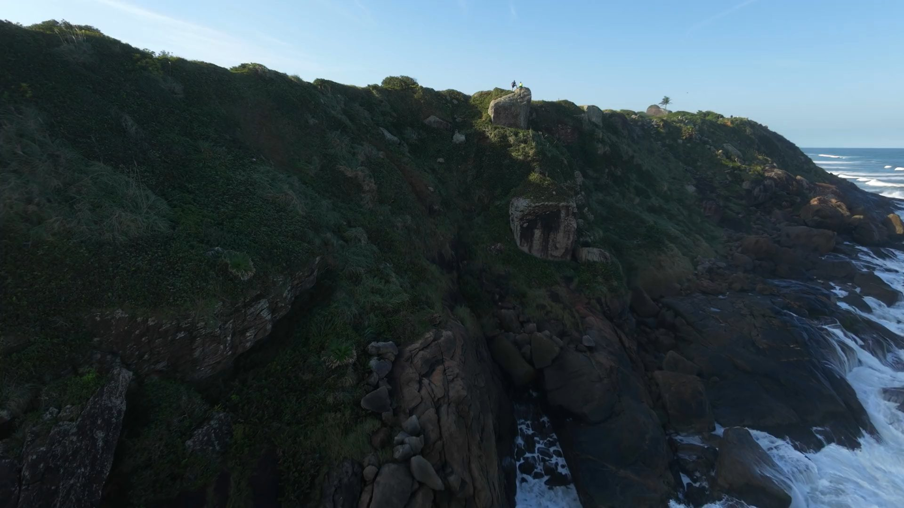
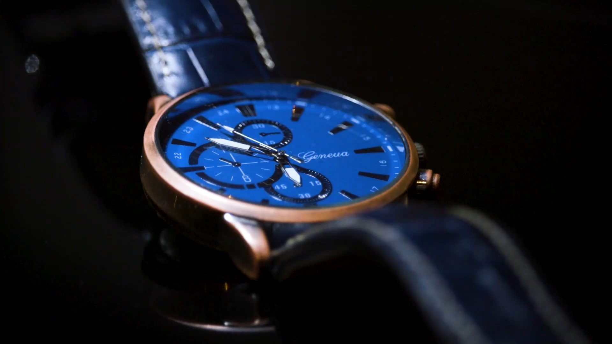
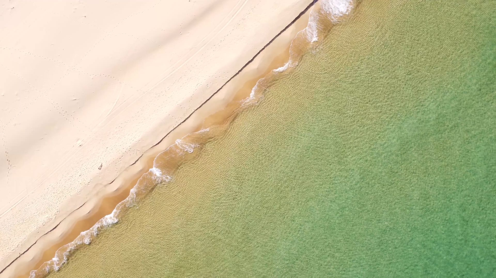
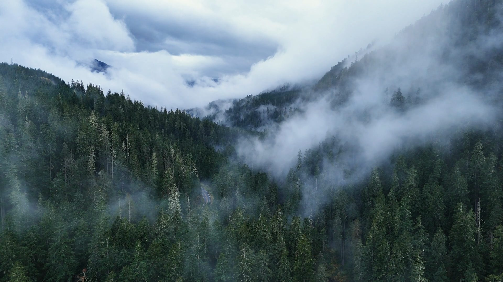

Full screenKestrel OneA product spins all the way round as you scroll, with text at each step.

SplitEmber & OakCoffee pours beside a column of text that fills in line by line.

Card grows · phone cropSaltlineA drone shot grows from a card to full screen. Phones get a tall crop.

Circle reveal · word by wordHaldenA watch dial opens out of a circle while the text arrives one word at a time.

Zoom out · blur inMareaA drone looks down at the shoreline and pulls back as the text comes into focus.

Background loopHollow PinesA header video shrunk from 13 MB to 2.4 MB that loops without a visible jump.